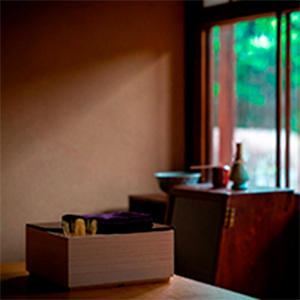
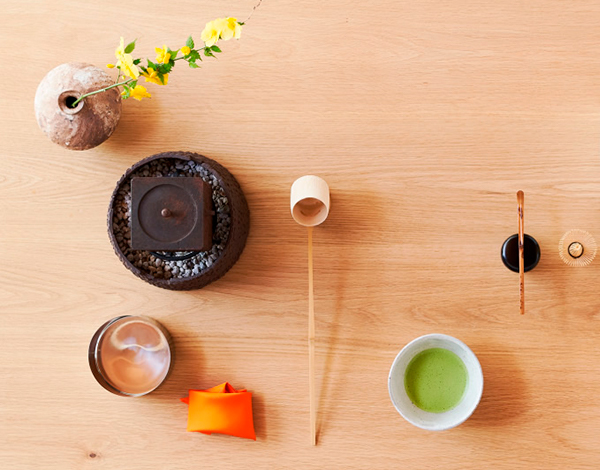

茶論について
茶論とは「以茶論美」をコンセプトとした、茶道に興味をお持ちの方が気軽に始められる教室･喫茶･茶道具のお店です。敷居が高く感じられる茶道文化の入り口を開きます。
詳しくはこちら
おしらせ

- 2019.06.03
- [日本橋店]喫茶の営業終了のお知らせ

- 2019.05.19
- [日本橋店]公開講座「新茶を淹れるワークショップ」のご案内
- 
- 2019.01.28
- [奈良町店]体験稽古の開講･新規ご入会終了のおしらせ
詳しくはこちら
茶論のお店
- 稽 古 に つ い て

- お茶を通してもてなしの 力量を上げる「稽古」
- ニュートラルに、自由に茶道の文化にふれていただきた い。日常の中でお茶を愉しんでいただきたい。という 思いから稽古を畳ではなくテーブルで行います。 「美しい所作を身に付けたい」「美味しくお茶を点て られるようになりたい」お茶を習う目標は人によって 様々です。 目標別に稽古内容を選んでいただけるように体系化さ れたコースと多様な単科をご用意しております。
詳しくはこちら
- 喫 茶 に つ い て
- 心に“閑”を持つ「喫茶」
- 忙しい日常の中で、茶道の持つ非日常感を通して心にほ っとするひと時を過ごしていただけるように、季節の美 味しいお菓子と選りすぐりのお茶にもてなしの心を込 めて提供いたします。
詳しくはこちら
- 見 世 に つ い て
- 
- オリジナルの茶道具を 販売する「見世」
- 茶論オリジナル商品をはじめとして、お茶に必要な道具 を各種揃えています。 茶論では、“格式”や“体裁”だけにとらわれることなく、 自分なりの物差しで道具を揃える愉しみをお伝えいた します。
詳しくはこちら
- オンラインショップ
- メールマガジン登録
 LINE@登録
LINE@登録 Facebook
Facebook
- 会社概要
- 採用情報
- お問い合わせ
- 個人情報の取り扱いについて
- 会員規約
- 特定商取引に基づく表示